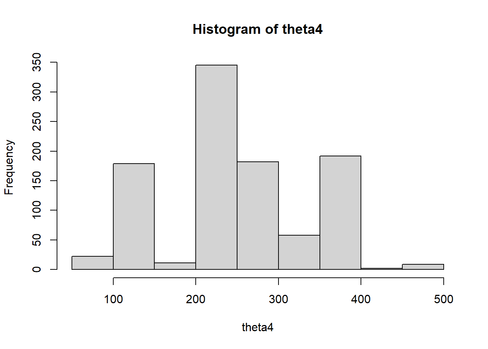
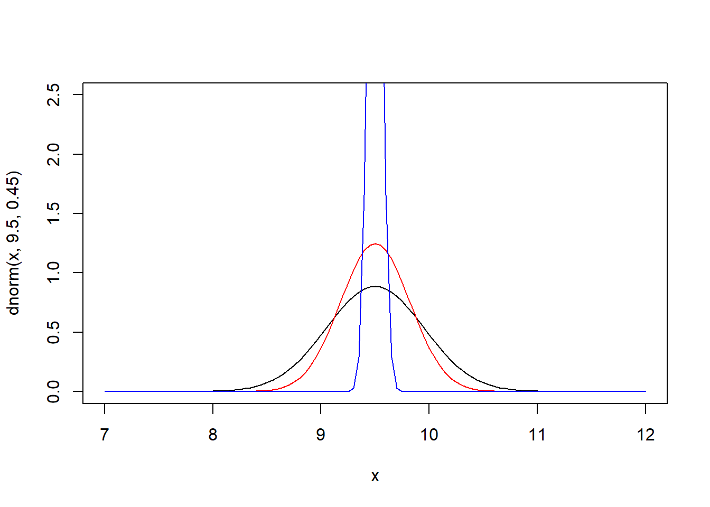

2 Tema 2: Distribuciones muestrales
A partir de este tema la estadística esta vinculada con la inferencia sobre los parámetros de la información/datos.
2.1 Muestras y población
Definición: Una población es una colección de objetos, estos objetos tienen variables.
Sea nuestra población \(U\), esta población puede ser finita o infinita
Finitas, \[U=\{u_1, u_2, \ldots , u_i,...,u_N \}\] Infinita,
\[U=\{u_1, u_2, \ldots , u_i,... \}\]
Cada elemento de \(U\) tiene variables o características asociadas:
\[u_i=\{X_{i1}, X_{i2}, \ldots, X_{iP} \}\] \[u_j=\{X_{j1}, X_{j2}, \ldots, X_{jP} \}\]
Definición, Muestra: Una muestra es un subconjunto de U.
Normalmente una muestra tiene un tamaño \(n\), el mecanismo para obtener la muestra de \(U\) puede ser con reposición o sin reposición, en cualquier caso podemos anotar esto de la siguiente forma, sea \(s\) una muestra:
\[s=\{u_{1}^*,u_2^*, \ldots, u_n^* \}\] Note que los elementos \(u_1\) y \(u_1^*\) no necesariamente son los mismos.
El subconjunto \(s\) no es único y en realidad existen muchas muestras posibles, según el contexto, esto depende:
- Del tamaño de \(N\), \(n\)
- Del mecanismo s/rep, c/rep.
Ejercicios,
- Sea la población \(U=\{a,b,c,d,e,f\}\), se define una muestra de \(n=3\), escriba todas las muestras posibles según ambos mecanismos de reposición.
Solución,
* (s/rep), 20: \(s_1=\{a,b,c\}\), \(s_2=\{a,b,d \}\), \(\ldots\) ,\(s_{20}=\{d,e,f\}\)
* (c/rep), 216: \(s_1=\{a,a,a\}\), \(s_2={a,a,b}\), \(\ldots\), \(s_{216}=\{f,f,f\}\)
- En una población de 90 estudiantes, si se define una muestra de 10 estudiantes, según ambos mecanismos de selección ¿Cuantas muestras se pueden armar?
- s/rep: 5720645481903
- c/rep: 34867844009999998976
Sin reposición:
\[Muestras_{Posibles}=\binom{N}{n}\]
Con reposición:
\[Muestras_{Posibles}=N^n\]
Imaginemos a la primera variable de interés \(X_1\), para el universo esta variable tiene los elementos:
\[X_1=\{X_{11}, X_{21}, X_{31}, \ldots, X_{N1} \}\]
Imaginemos que observamos a \(X_1\), para la muestra.
\[X_1^*=\{X_{11}^*, X_{21}^*, X_{31}^*, \ldots, X_{n1}^* \}\]
Estos \(X_{i1}^*\) para los \(i=1,\ldots,n\) son variables aleatorias. Por lo tanto \(X_1\) es un vector aleatorio de tamaño \(n\).
De ahora en adelante vamos a trabajar con un solo vector aleatorio denominado \(X\), de tal forma que este sea la colección de \(n\) variables aleatorias.
\[X=\{X_1,X_2,\ldots,X_n \}\]
Definición.
La colección del vector aleatorio \(X=\{X_1,X_2,\ldots,X_n \}\), son independientes e idénticamente distribuidas (iid) si la distribución conjunta de las \(n\) variables puede ser escrita como \(f(x_1,x_2,\ldots,x_n)=f(x_1)*f(x_2)*\ldots*f(x_n)\) y además todas las \(x_i\) tienen la misma función de distribución \(F(x)\).
Definición
Sea \(N\) el tamaño de la población y \(n\) el tamaño de la muestra, ambos valores para fines de este capítulo son fijas o constantes.
2.2 Parámetros, estadísticas y estimadores.
El objetivo de la estadística es aprender acerca de las características de una población. Estas características las vamos a llamar parámetros.
Definición,
Un parámetro \(\theta\) es una función sobre la población \(U\).
\[\theta=f(U,X,Y,Z,\ldots)\] Nota: Los parámetros de una población son constantes.
Ejemplo, sea el universo los 10 primeros números naturales y sus valores. \(Y=\{1,2,3,4,5,6,7,8,9,10\}\). Sobre estos valores de esta población de \(N=10\) se pueden calcular los siguientes parámetros.
- Total
\[\theta_1=t_y=\sum_U y_i=55\] * Media
\[\theta_2=\mu_y=\frac{t_y}{N}=\frac{55}{10}=5.5\]
- Máximo: \(\theta_3=max(y)=10\)
- Mínimo: \(\theta_4=max(y)=1\)
Es posibles hacer transformaciones sobre \(Y\), sea \(Z\) una variables binaria que identifique a los números primos de \(Y\); \(1=primo\), \(0=\sim primo\)
\[Z=\{1,1,1,0,1,0,1,0,0,0 \}\]
Calcular el promedio de \(Z\)
\[\theta_5=\mu_z=\frac{5}{10}=0.5\]
Cuando obtenemos la media de un vector binario, obtenemos lo que se denomina un proporción
\[\theta_5=P_a=\frac{\#A}{N}\]
\[\theta_5=P_{primos}=\frac{\#primos}{N}\]
Definición, estadística
Se denomina estadística a una función sobre la muestra
Definición, estimador
Un estimador \(\hat{\theta}\) para el parámetro \(\theta\) es una estadística que busca aproximar/adivinar el valor de \(\theta\)
Ejemplo, para la variable \(Y=\{1,2,3,4,5,6,7,8,9,10\}\), imaginar que se selecciona un muestra de tamaño \(n=4\) s/rep.
La cantidad de muestras posibles es de 210, supongamos que realizamos 2 procesos de selección para la muestra y obtenemos:
- \(s_1=\{8, 1, 3, 7\}\)
- \(s_2=\{8, 2, 6, 5\}\)
Sabemos que el parámetro del total de \(Y\) es \(t_y=55\), ¿Qué? función se puede aplicar sobre la muestra para postular a un estimador que se aproxime a \(t_y\) sobre las 2 muestras seleccionadas
\[\hat{\theta}_1=\hat{t}_y=\sum_s y_i\]
Para \(s_1\) el valor del estimador es de \(\hat{t}_{y,s1}=19\), \(\hat{t}_{y,s2}=21\), los valores evaluados sobre una muestra y un estimador se conoce como estimación
\[\hat{\theta}_2=\hat{t}_y=\prod_s y_i\]
Las estimaciones con el estimador propuesto \(\hat{t}_{y,s1}=8*1*3*7=168\), \(\hat{t}_{y,s1}=480\)
\[\hat{\theta}_3=\frac{\prod_s y_i}{3}\]
\(\hat{t}_{y,s1}=56\), \(\hat{t}_{y,s2}=160\)
\[\hat{\theta}_4=\frac{\sum_{s}y_i^2}{2}\]
\(\hat{t}_{y,s1}=61.5\), \(\hat{t}_{y,s2}=64.5\)
\[\hat{\theta}_5=\frac{N}{n} \sum_{s}y_i \]
\(\hat{t}_{y,s1}=47.5\), \(\hat{t}_{y,s2}=52.5\)
2.3 Distribución muestral
Recordar que una estadística es una función sobre la muestra y sobre los valores que toman las variables aleatorias vinculadas a esta. Como la estadística es una función sobre las muestras aleatorias (muestras posibles) las evaluaciones que se realizan para cada una de las muestras posibles (estimadores) conforman lo que vamos a denominar una distribución muestral.
Por ejemplo si planteamos al estimador del parámetro del total, recordar:
\[\theta=t_y=\sum_U y_i\] Un estimador para este parámetro será:
\[\hat{\theta}=\hat{t}_y=\frac{N}{n} \sum_s y_i\]
Este \(\hat{\theta}\) es una estadística sobre las muestras aleatorias, por lo tanto podemos decir que existe una distribución de probabilidad para este estimador, a esa distribución de probabilidad se conoce como distribución muestral.
Ejemplo práctico.
Supongamos que de una población de 6 personas tenemos la información de sus ingresos mensuales. \(Y_{Ingresos}=\{2000,3000,3500,0,6000,4500\}\). \(N=6\)
Supongamos que seleccionamos una muestra de tamaño \(n=3\) de esta población, para ambos mecanismos de selección (s/rep, c/rep), se pide para ambos mecanismos:
- Conocer la cantidad de muestras posibles y mostrar estas.
- Para el estimador
\[\hat{\bar{Y}}=\frac{1}{n}\sum_s y_i\]
construir su distribución muestral y calcular su esperanza y su varianza * Para el estimador;
\[\hat{t}_y=\frac{N}{n}\sum_s y_i\]
construir su distribución muestral y calcular su esperanza y su varianza
Respuesta,
(S/rep) Las muestras posibles son 20, estas muestras posibles son:
Y<-c(2000,3000,3500,0,6000,4500)
s<-combn(Y,3)
s## [,1] [,2] [,3] [,4] [,5]
## [1,] 2000 2000 2000 2000 2000
## [2,] 3000 3000 3000 3000 3500
## [3,] 3500 0 6000 4500 0
## [,6] [,7] [,8] [,9]
## [1,] 2000 2000 2000 2000
## [2,] 3500 3500 0 0
## [3,] 6000 4500 6000 4500
## [,10] [,11] [,12] [,13]
## [1,] 2000 3000 3000 3000
## [2,] 6000 3500 3500 3500
## [3,] 4500 0 6000 4500
## [,14] [,15] [,16] [,17]
## [1,] 3000 3000 3000 3500
## [2,] 0 0 6000 0
## [3,] 6000 4500 4500 6000
## [,18] [,19] [,20]
## [1,] 3500 3500 0
## [2,] 0 6000 6000
## [3,] 4500 4500 4500Para el estimador de la media;
Tomar en cuenta que el valor del parámetro de la media poblacional es: \(\mu_y=\sum_U y_i /N=3166.667\)
y<-apply(s,2,sum)/3 #Distribución muestral para el estimador de la media
hist(y)
abline(v=mean(Y),col="red",lwd=3)
# calcular la esperanza y la varianza
uy<-sum(y*(1/20)) # esperanza del estimador de la media
sum((y-uy)^2*(1/20)) # varianza de la media muestral## [1] 711111.1\[E[\hat{\theta}]=\sum_{Rs} \hat{\theta_s} P(\hat{\theta}=\hat{\theta_s})\]
\[V(\hat{\theta})=E[(\hat{\theta}-E[\hat{\theta}])^2]=\sum_{s}(\hat{\theta_s}-E[\hat{\theta}])^2*P(\hat{\theta}=\hat{\theta})\]
Nota, Si \(E[\hat{\theta}]=\theta\) decimos que el estimador \(\hat{\theta}\) es un estimador insesgado (sin sesgo)
El estimador de la media muestral, es un estimador insesgado de la media poblacional.
Para el estimador del total;
Tomar en cuenta que el valor del parámetro del total poblacional es: \(t_y=\sum_U y_i=19000\)
ty<-apply(s,2,sum)*(6/3) #Distribución muestral para el estimador del total
hist(ty)
abline(v=sum(Y),col="red",lwd=3)
pty<-sum(ty*(1/20)) # esperanza
sum((ty-pty)^2*(1/20)) # varianza de la media muestral## [1] 25600000\[E[\hat{t}_y]=E[N*\bar{Y}]=N E[\bar{Y}]=N*u_y=N*\frac{\sum_U y_i}{N}=\sum_U {y_i}=t_y\] Repetir los cálculos para un muestreo con reposición. Muestras probables \(6^3=N^n=216\).
Y<-round(rnorm(25,30,5))
s<-combn(Y,10)
y<-apply(s,2,sum)/10
hist(y)
abline(v=mean(Y),col="red",lwd=2)2.4 Distribución muestral para la media
Recordar que para una población (\(U\)) con alguna variable \(X\) de tipo cuantitativa se puede obtener el parámetro de la media, definido como:
\[\mu_x=\frac{\sum_U x_i}{N}\]
Esta variable \(X\) en la población por lo tanto tiene su media \(\mu_x\) y también tiene su varianza, denotada por \(\sigma_x^2\).
Teorema:
Sean \(X_1,X_2,\ldots,X_n\) variables aleatorias para una muestra de tamaño \(n\) extraida de la población \(U\), donde estas \(X_i\) independientes e idénticamente distribuidas (iid) como: \(X_i\sim .(E[X_i]=\mu_x,V(X_i)=\sigma_x^2)\), entonces, si:
\[\bar{X}=\frac{\sum_s x_i}{n}\]
Tenemos que
\[E[\bar{X}]=\mu_x\]
\[V(\bar{X})=\sigma^2_{\bar{x}}=\frac{\sigma^2_x}{n}\]
Demostración,
\[E[\bar{X}]=E\left[\frac{\sum_s x_i}{n}\right]=\frac{1}{n}E[x_1+x_2+\ldots+x_n]=\frac{1}{n}\left(E[x_1]+E[x_2]+\ldots+E[x_n] \right)=\] \[=\frac{1}{n}(\mu_x+\mu_x+\ldots+\mu_x)=\frac{n \mu_x}{n}=\mu_x\]
Si, \(X\) e \(Y\) son independientes \(Cov(X,Y)=0\).
\[V(X+Y)=V(X)+V(Y)\]
\[V(\bar{X})=V\left(\frac{\sum_s x_i}{n}\right)=\frac{1}{n^2}V(x_1+x_2+\ldots+x_n)=\frac{1}{n^2}\{V(x_1)+\ldots+V(x_n)\}=\] \[=\frac{1}{n^2}(\sigma^2_x+\sigma^2_x+\ldots+\sigma^2_x)=\frac{n \sigma_x^2}{n^2}=\frac{\sigma^2_x}{n}\]
2.5 Teorema del límite central
Teorema:
Si \(\bar{X}\) es la media de una muestra aleatoria de tamaño \(n\). Tomada de una población \(U\) con media \(\mu_x\) y varianza finita \(\sigma^2_x\). Entonces la forma límite de la distribución de:
\[Z=\frac{\bar{X}-E[\bar{X}]}{\sqrt{V(\bar{X})}}=\frac{\bar{X}-\mu_x}{\frac{\sigma_x}{\sqrt{n}}}\] a medida que \(n \rightarrow \infty\), podemos asegurar que \(Z\sim N(0,1)\), en este marco se puede decir a medida que \(n\) es más grande \(\bar{X}\sim N(\mu_x,\frac{\sigma^2_x}{n})\)
Nota: esta idea de \(n\) grande se usa tradicionalmente el valor de \(n>30\), hay textos que plantean \(n=20\).
Simulación del teorema del límite central:
N<-1000000
x<-round(runif(N,0,10000),0)# ingresos mensuales de una población
hist(x)
n<-30
choose(N,n)## [1] 3.768348e+147#simular 1000 muestras distintas de tamaño n y calcular su media.
xbar<-NULL
for(i in 1:10000){
s<-sample(x,n)
xbar[i]<-mean(s)
}
hist(xbar)
plot(density(xbar),col="blue",lwd=2)
points(density(rnorm(10^6,mean(x),sqrt(var(x)*((n-1)/n))/sqrt(n))),type="l",col="red",lwd=2)
2.6 Distribución muestral para la diferencia de medias
Sean dos poblaciones \(U_1\) y \(U_2\) independientes con medias y varianzas respectivamente: \(\mu_{x_1}\) y \(\mu_{x_2}\), \(\sigma^2_{x_1}\) y \(\sigma^2_{x_2}\).
Teorema:
La distribución muestral de las diferencias de media \(\bar{X_1}-\bar{X_2}\) esta tiene una distribución aproximadamente normal (\(n\rightarrow \infty\)) con medias y varianzas dadas por:
\[E[\bar{X_1}-\bar{X_2}]=\mu_{x_1}-\mu_{x_2}\]
\[V(\bar{X_1}-\bar{X_2})=\frac{\sigma^2_{x_1}}{n_1}+\frac{\sigma^2_{x_2}}{n_2}\] Demostración:
\[E[\bar{X_1}-\bar{X_2}]=E[\bar{X_1}]-E[\bar{X_2}]=\mu_{x_1}-\mu_{x_2}\]
\[V(\bar{X_1}-\bar{X_2})=V(\bar{X_1})+V(\bar{X_2})=\frac{\sigma^2_{x_1}}{n_1}+\frac{\sigma^2_{x_2}}{n_2}\]
2.7 Distribución muestral para la proporción
La proporción no es nada más que un caso especial de la media para \(X\) que toma valores binarios según alguna característica de interés.
Sea \(P_A=\frac{\#A}{N}=\frac{\sum_U x_i}{N}\), \(x_i=1\) si \(i \in A\) \(x_i=0\) eoc. la proporción de alguna característica de la población.
Así la el estimador de la proporción sera:
\[\hat{P}_A=\frac{\sum_s{x_i}}{n}=\frac{\#a}{n}\]
Teorema:
Para el estadístico \(\hat{P}_A\) se cumple cuando \(n\) tiende a infinito los siguientes resultados:
- \(E[\hat{P}_A]=P_A\)
- \(V(\hat{P}_A)=\frac{\sigma^2_A}{n}\)
- \(\hat{P}_A\sim N(P_A,\frac{\sigma^2_A}{n})\), cuando \(n \rightarrow \infty\)
Tarea, encontrar la forma de \(\sigma^2_A\), sabiendo que \(x_i\) es binaria.
\[\sigma^2_A=\frac{\sum_U(x_i-\mu_x)^2}{N}= P_A *(1-P_A)\]
2.8 Distribución muestral para la varianza
Recordar que para una población \(U\), si observamos a una variable de interés respecto sus características podemos obtener medidas de centralidad y también medidas de variabilidad, por ejemplo, sea \(X\) una variables definida para toda la población, y definamos los siguientes parámetros de \(X\).
\[\mu_x=\frac{\sum_U x_i}{N}\]
Esta \(\mu_x\) es una medida de centralidad, normalmente conocida como media, promedio de \(X\), la otra medida puede ser:
\[\sigma^2_x=\frac{\sum_U (x_i-\mu_x)^2}{N}\]
\(\sigma^2_x\) es la varianza poblacional
Ejemplo,
Sea una población de \(N=5\) elementos con la variable \(X=\{10,15,20,20,35\}\), calcular \(\mu_x\) y \(\sigma^2_x\).
- \(\mu_x=20\)
- \(\sigma^2_x=70\)
Suponer que se toman muestras aleatorias de esta población de tamaño \(n=3\) sin reposición. La cantidad de muestras posibles es 10.
x<-c(10,15,20,20,35)
s<-combn(x,3)
s## [,1] [,2] [,3] [,4] [,5] [,6] [,7] [,8] [,9]
## [1,] 10 10 10 10 10 10 15 15 15
## [2,] 15 15 15 20 20 20 20 20 20
## [3,] 20 20 35 20 35 35 20 35 35
## [,10]
## [1,] 20
## [2,] 20
## [3,] 35#distribución muestral de la media
mean(apply(s, 2, mean)) ## [1] 20Pensemos para el caso de la varianza en posibles estadísticos (estimadores):
\[\hat{\theta}_1=\hat{\sigma}^2_x=\frac{\sum_s (x_i-\bar{x})^2}{n}\]
\[\hat{\theta}_2=\hat{S}^2_x=\frac{\sum_s (x_i-\bar{x})^2}{n-1}\]
x<-c(10,15,20,20,35)
n<-3;N<-5
s## [,1] [,2] [,3] [,4] [,5] [,6] [,7] [,8] [,9]
## [1,] 10 10 10 10 10 10 15 15 15
## [2,] 15 15 15 20 20 20 20 20 20
## [3,] 20 20 35 20 35 35 20 35 35
## [,10]
## [1,] 20
## [2,] 20
## [3,] 35var(x)*((N-1)/N)## [1] 70theta1<-apply(s,2,var)*((n-1)/n)
theta2<-apply(s,2,var)
theta1## [1] 16.666667 16.666667 116.666667 22.222222
## [5] 105.555556 105.555556 5.555556 72.222222
## [9] 72.222222 50.000000theta2## [1] 25.000000 25.000000 175.000000 33.333333
## [5] 158.333333 158.333333 8.333333 108.333333
## [9] 108.333333 75.000000plot(density(theta1),xlim=c(-50,300))
points(density(theta2),col="red",type="l")
mean(theta1) #E[]## [1] 58.33333mean(theta2) #E[]## [1] 87.5Notar que para el ejemplo \(E[\hat{\theta_1}]\) ni \(E[\hat{\theta_2}]\) se acercan a \(\sigma^2_x\), sin embargo, \(E[\theta_2]=S^2_x\).
\[S^2_x=\frac{\sum_U (x_i-\mu_x)^2}{N-1}\] > Teorema
Sea \(X_1,X_2,\ldots,X_n\) una muestra aleatoria extraída de una población Normal \(N(\mu_x,\sigma^2_x)\), definamos al estadístico:
\[\hat{S}^2_x=\frac{\sum_s (x_i-\bar{x})^2}{n-1}\]
Entonces, se cumple
\[\chi^2=\frac{(n-1)\hat{S}^2_x}{\sigma^2_x}=\frac{\sum_s (x_i-\bar{x})^2}{\sigma^2_x}\sim \chi^2(n-1)\]
Simulación;
#población de tamaño N=1000
set.seed(999)
x<-rnorm(1000,20,5)
hist(x)
#suponer que se extra una muestra de n=20 de esta población,
choose(1000,20)## [1] 3.394828e+41n<-20
#vamos a simular unas 1500 muestras posibles sigma=25
x2<-NULL
for(i in 1:100000){
x2[i]<-(var(sample(x,20))*(n-1))/25
}
x2## [1] 28.012821 13.303299 12.916730 15.444633
## [5] 20.070571 18.598947 12.987323 26.229370
## [9] 17.443031 29.634228 19.228462 16.847166
## [13] 13.837075 12.306583 20.316401 6.691069
## [17] 18.716776 17.617646 11.830859 13.593042
## [21] 21.748010 11.481425 9.106947 9.473332
## [25] 8.428679 13.683606 15.170322 12.459595
## [29] 16.076973 11.618863 19.399864 18.619069
## [33] 15.620865 23.144277 19.006885 31.386997
## [37] 16.965785 23.948281 12.457150 10.199054
## [41] 15.890153 14.075756 18.272734 16.332558
## [45] 14.613984 25.587406 17.274712 13.451648
## [49] 15.951381 29.599580 28.751381 27.883479
## [53] 24.847844 28.122133 21.778322 13.042337
## [57] 12.756593 13.588587 15.381787 15.173170
## [61] 17.064814 10.215598 21.617442 13.529998
## [65] 11.333242 11.942220 13.961767 11.204895
## [69] 9.383787 16.447210 14.246598 22.518621
## [73] 12.660786 17.883892 13.073025 21.860708
## [77] 25.675834 11.964393 16.152063 33.642039
## [81] 20.788343 25.146765 18.091672 27.518788
## [85] 17.450027 5.250517 35.510067 20.579231
## [89] 18.107810 7.837748 28.530112 20.276653
## [93] 21.042629 17.020561 11.251209 12.107773
## [97] 19.502901 9.780230 26.695559 20.650701
## [101] 8.803620 17.234677 16.699761 14.213930
## [105] 21.911950 23.045968 15.181081 12.116822
## [109] 26.385342 23.237274 20.975653 20.512500
## [113] 19.050228 14.114346 26.703015 15.162247
## [117] 14.347395 16.567249 12.277332 20.445499
## [121] 13.605211 26.066466 20.531418 11.402210
## [125] 18.172740 19.021145 11.423122 16.202069
## [129] 22.060284 26.552551 22.005707 7.734121
## [133] 16.220572 14.392079 14.301308 21.769430
## [137] 22.420456 15.618478 17.447861 17.127857
## [141] 14.726064 25.266101 15.663966 17.745215
## [145] 18.590808 19.813088 35.369779 22.437589
## [149] 26.518719 5.550327 22.442252 22.630876
## [153] 10.092094 11.243247 21.629633 25.316789
## [157] 14.803836 17.506524 13.280020 22.070279
## [161] 19.336450 39.384576 22.162003 16.597604
## [165] 21.865927 22.053510 17.358355 14.287258
## [169] 15.307627 15.212806 20.894767 12.342412
## [173] 15.181616 16.823311 22.328185 16.870523
## [177] 11.932493 14.608943 20.831203 21.081735
## [181] 15.847040 13.459898 14.848697 16.029962
## [185] 11.564021 14.063650 16.309441 19.966832
## [189] 13.932327 9.026528 18.082221 12.720960
## [193] 15.024540 18.718807 25.729287 15.350011
## [197] 20.544050 18.969261 21.585216 31.963216
## [201] 24.672649 25.671613 13.023054 28.851590
## [205] 16.483956 11.303823 26.648202 8.478335
## [209] 17.726722 15.430695 24.317257 32.335164
## [213] 9.607395 26.820571 12.723560 15.235108
## [217] 15.809233 22.814399 24.265359 20.872881
## [221] 13.048042 12.300579 18.075927 11.937559
## [225] 17.417532 18.025925 23.255247 20.109420
## [229] 23.253181 14.372813 21.812857 14.024146
## [233] 27.546107 15.498092 13.235267 14.098803
## [237] 35.153901 18.649959 21.851561 19.819864
## [241] 15.316509 15.795272 13.516208 20.682192
## [245] 14.620640 14.449217 25.434318 26.168725
## [249] 23.276445 28.915826 17.596923 28.010290
## [253] 18.341387 17.879718 17.026406 27.204161
## [257] 16.697266 26.320726 13.793118 24.030272
## [261] 16.239461 30.971929 13.086218 11.798937
## [265] 9.299183 19.134689 25.052224 13.346834
## [269] 15.982050 23.669918 22.165420 18.176970
## [273] 17.694919 20.192060 20.412274 35.497393
## [277] 17.407584 19.655298 9.347727 25.572063
## [281] 15.704892 13.559946 16.266726 14.442831
## [285] 23.863729 17.000075 19.519409 25.114011
## [289] 20.148385 22.266228 25.853997 22.662551
## [293] 20.801108 10.925624 17.810104 26.175869
## [297] 14.277400 13.318309 16.595470 15.266218
## [301] 21.262551 8.580367 20.701016 16.503482
## [305] 11.918446 13.505003 30.125166 13.223280
## [309] 18.575549 34.856473 24.677999 20.881330
## [313] 15.175015 20.602794 22.235731 24.510002
## [317] 16.103575 14.920085 31.667352 25.540828
## [321] 11.809267 18.319506 21.149436 21.635312
## [325] 14.180294 19.957223 15.858002 17.166201
## [329] 14.493781 14.093451 14.014025 22.213693
## [333] 32.223125 17.241425 13.288698 13.250723
## [337] 14.734604 13.995601 17.404789 18.592486
## [341] 15.247989 17.637603 9.364431 26.359784
## [345] 13.982073 20.573854 18.149615 9.110028
## [349] 22.766342 21.045694 22.258774 12.546646
## [353] 21.359003 15.692677 16.874471 20.538731
## [357] 15.455086 25.956684 18.774150 16.489980
## [361] 18.071091 28.006534 23.467235 17.147189
## [365] 16.792277 15.447061 10.594702 12.256940
## [369] 16.145375 17.736032 17.828512 12.531759
## [373] 31.573850 20.210519 16.019958 17.578239
## [377] 17.772428 15.250837 20.502192 14.979508
## [381] 13.992929 21.260858 13.987037 18.380611
## [385] 24.629809 21.920440 16.724372 13.391569
## [389] 26.174884 10.900662 8.290249 9.866609
## [393] 21.867045 19.955929 15.974358 9.058562
## [397] 5.966568 34.844445 24.948710 20.310470
## [401] 19.546296 11.888163 12.286091 9.132744
## [405] 23.602785 20.014303 14.249253 15.506009
## [409] 15.437651 9.281142 19.894464 23.939253
## [413] 19.924322 15.741860 22.561480 28.045692
## [417] 33.280957 22.673003 22.570943 11.497906
## [421] 19.209914 18.966212 19.127201 13.153828
## [425] 16.993053 21.556625 10.286481 14.782502
## [429] 23.896517 13.143720 28.732325 8.044952
## [433] 23.947529 17.891754 18.916209 17.088394
## [437] 12.153914 23.588815 27.825393 18.556936
## [441] 18.475666 18.546475 19.336447 29.765206
## [445] 19.891351 12.766444 21.244537 31.254842
## [449] 14.848853 19.255805 30.316743 15.625976
## [453] 10.203716 17.495950 23.960264 17.154687
## [457] 15.679591 22.816883 14.221807 21.113025
## [461] 20.645354 20.407738 20.927321 16.558282
## [465] 9.800061 14.866611 18.587171 16.813358
## [469] 13.847721 22.178993 26.207978 21.315105
## [473] 32.031176 20.617618 31.938098 10.901848
## [477] 15.117016 8.140391 11.466804 14.176978
## [481] 16.560051 18.967196 17.458704 10.764479
## [485] 20.389500 12.153445 21.915928 16.673494
## [489] 22.262874 23.939511 20.350276 14.509098
## [493] 9.036172 14.584719 14.211505 21.439348
## [497] 18.186422 21.754326 16.357508 16.754581
## [501] 20.204783 9.461267 12.786030 10.312692
## [505] 23.812264 10.630994 25.660905 24.008654
## [509] 19.444126 13.635916 10.520709 20.515147
## [513] 13.876175 15.491769 21.450161 17.486085
## [517] 15.720568 17.524114 19.871122 22.700891
## [521] 19.227107 17.761933 27.973973 19.886723
## [525] 20.925573 23.055274 8.174269 13.171267
## [529] 21.546352 16.652625 22.175516 23.707881
## [533] 11.228519 11.387434 16.447506 24.676754
## [537] 16.227232 11.739386 21.441527 15.707938
## [541] 18.315900 19.424615 17.308554 24.028920
## [545] 14.741197 20.185355 16.585532 26.366693
## [549] 20.555072 12.281362 20.937916 23.546578
## [553] 15.731429 19.801307 16.784120 20.765949
## [557] 9.202193 11.329222 14.202221 11.452321
## [561] 17.653245 18.144876 24.238262 15.465025
## [565] 19.793484 11.315699 11.966883 10.439119
## [569] 22.554602 15.515201 26.437958 26.615291
## [573] 16.844931 26.615512 15.257409 19.586495
## [577] 14.350989 13.182293 9.553267 4.491736
## [581] 11.178881 22.472408 15.075446 18.204019
## [585] 15.878175 15.658180 21.351499 16.204857
## [589] 20.442849 10.947412 17.843151 15.867059
## [593] 20.304103 17.002257 11.257525 20.192141
## [597] 15.917608 14.602950 26.940746 19.137400
## [601] 11.781175 14.305902 20.795786 30.453513
## [605] 15.538217 15.403194 30.069716 7.593631
## [609] 26.127048 15.769910 14.562004 30.980415
## [613] 36.021805 24.049130 11.271203 17.409826
## [617] 29.315625 23.809991 29.126933 14.257977
## [621] 15.056230 23.566388 15.174209 17.382185
## [625] 15.433936 26.392629 26.628483 15.262434
## [629] 22.175066 19.249082 18.221410 17.595876
## [633] 7.951111 17.223180 30.272167 16.662376
## [637] 17.849205 9.536688 22.741268 23.950851
## [641] 19.674210 14.901407 11.114026 14.322474
## [645] 19.217378 18.881117 14.227646 12.417058
## [649] 21.193379 6.238202 25.804310 16.128059
## [653] 21.292803 13.583191 13.416589 16.998586
## [657] 19.670594 19.571160 13.261077 10.385480
## [661] 22.444720 15.186642 8.549110 12.592156
## [665] 12.126122 21.612231 16.106128 7.185419
## [669] 19.155048 14.783458 12.880983 23.028895
## [673] 14.603729 13.465318 21.971983 28.639976
## [677] 14.957262 16.521305 15.156209 16.997971
## [681] 18.066716 10.105663 12.527995 25.242331
## [685] 29.212772 13.279441 18.518994 23.081568
## [689] 8.991684 18.891378 14.390195 19.481693
## [693] 19.247036 15.173736 19.686150 15.104820
## [697] 18.368197 17.131629 15.269682 27.958178
## [701] 14.609845 18.348459 17.720580 17.278284
## [705] 15.970391 31.189266 20.609505 13.667190
## [709] 20.343798 23.676878 16.817175 27.798076
## [713] 14.380824 23.119645 20.294323 12.397698
## [717] 18.077482 15.548011 13.842401 15.732343
## [721] 9.482712 8.778730 37.133787 24.199658
## [725] 17.041008 16.273570 22.309599 14.140296
## [729] 15.538825 19.018784 14.509132 22.133283
## [733] 29.898216 21.899834 8.319081 28.376068
## [737] 16.159040 14.711742 16.128796 17.363660
## [741] 20.650008 20.296518 17.752446 19.662599
## [745] 24.055001 26.253885 15.864813 22.608158
## [749] 20.920132 11.771987 17.570611 20.586085
## [753] 25.208490 20.049499 20.545025 22.385286
## [757] 27.045100 22.773739 12.998953 18.532624
## [761] 15.560464 17.676388 13.203288 18.897017
## [765] 22.478345 19.065920 21.805359 16.342205
## [769] 15.511562 29.192431 22.918919 20.299212
## [773] 14.677958 19.784591 13.834712 16.187329
## [777] 26.735234 14.768448 23.777946 29.613875
## [781] 12.432792 37.751422 20.805643 16.105735
## [785] 13.631205 14.710745 16.738886 18.346160
## [789] 17.926659 11.742877 17.411051 18.677338
## [793] 15.471975 25.991338 16.839181 11.470087
## [797] 10.955131 26.606070 16.820614 24.129111
## [801] 44.924757 15.479093 15.751811 21.996591
## [805] 19.340129 11.096019 18.161506 21.631261
## [809] 17.006621 27.793634 19.260289 9.979732
## [813] 17.056580 20.108851 19.097732 18.232420
## [817] 14.339916 19.669007 18.351885 9.760430
## [821] 13.369856 17.570671 9.413871 16.272449
## [825] 26.617002 14.471497 25.732663 21.930818
## [829] 7.796016 13.842560 15.578838 14.404152
## [833] 12.709148 37.570245 14.800009 19.169672
## [837] 20.230360 18.097048 15.598180 24.112340
## [841] 24.500908 10.507524 22.422073 15.871907
## [845] 10.750142 15.342556 18.915039 21.791224
## [849] 10.825029 18.084313 16.609825 13.699246
## [853] 30.363761 8.009254 7.244581 18.225919
## [857] 14.612970 16.141131 15.521536 10.797909
## [861] 10.723517 20.243818 14.060388 15.937919
## [865] 18.372922 7.746550 23.775462 16.209138
## [869] 23.600860 16.307198 23.121222 12.642161
## [873] 29.532925 27.326932 16.182682 20.959115
## [877] 30.061046 25.554703 10.161560 16.051951
## [881] 15.319699 13.966131 8.243000 16.726587
## [885] 11.070633 21.128304 13.846221 14.991823
## [889] 13.534118 9.887567 14.216242 22.186037
## [893] 11.263336 29.407918 15.972765 8.487906
## [897] 16.596630 12.153323 19.406587 20.387614
## [901] 14.509980 12.219619 10.951065 21.920734
## [905] 20.764404 27.442317 15.071589 24.042310
## [909] 20.035989 7.720464 17.979013 28.385669
## [913] 18.999167 22.648348 16.417482 7.843558
## [917] 23.528440 21.043034 16.771143 19.063782
## [921] 13.424514 13.113389 14.166799 13.271906
## [925] 12.066717 19.910054 10.035170 14.076576
## [929] 22.261232 14.348785 17.136114 38.194209
## [933] 12.538656 19.148550 21.865993 20.316560
## [937] 13.671468 18.326424 23.561805 13.496954
## [941] 25.213289 23.173681 19.031335 12.886222
## [945] 11.804907 7.554450 17.139227 22.100363
## [949] 16.843482 8.286483 18.911796 22.663047
## [953] 8.503524 22.059767 23.421176 13.994647
## [957] 16.290766 19.480129 10.363203 15.488181
## [961] 18.086993 24.379918 17.302920 15.080271
## [965] 17.519433 19.353402 18.856519 17.311082
## [969] 27.075140 34.118128 11.110204 10.452672
## [973] 29.724010 34.261895 19.255181 19.463401
## [977] 13.531030 19.884112 13.418974 9.565242
## [981] 14.571297 15.543387 13.262746 16.333737
## [985] 17.943791 20.294559 16.988730 11.853706
## [989] 14.768046 19.212293 18.752969 14.972371
## [993] 8.403704 22.308734 12.866281 16.714866
## [997] 20.025841 11.190805 16.622595 10.999016
## [ reached getOption("max.print") -- omitted 99000 entries ]plot(density(x2))
points(density(rchisq(1000000,19)),col="red",type="l")
2.9 Distribución \(\chi^2\)
Se dice que una variable aleatoria \(X\) tiene una distribución Chi-cuadrado \(\chi^2\) con \(v\) grados de libertad. Se escribe como: \(X \sim \chi^2(v)\), donde el \(Rx=\{x>0\}\), si su función de densidad es:
\[f(x)=\frac{1}{2^\frac{v}{2} \Gamma(\frac{v}{2})}*x^{\frac{v}{2}-1}*e^{-\frac{x}{2}}\]
curve(dchisq(x,1),xlim=c(0,40),ylim=c(0,0.4))
for(v in 1:30){
curve(dchisq(x,v),add=T,col=v)
}
Donde,
\[E[X]=v\] \[V(X)=2v\]
Ejercicio,
Encuentre la probabilidad de que una muestra aleatoria de \(n=25\) de un población normal con varianza \(\sigma_x^2=9\), tenga una varianza muestral \(\hat{S^2}\) entre 4 y 15.
\[P(4<\hat{S}^2_x<15)=P(4*24/9<\frac{(n-1)\hat{S}^2_x}{\sigma^2_x}<15*24/9)=P(10.66<\chi^2 <40)\] \[P(10.66<\chi^2 <40)=F(40)-F(10.66)=0.9786-0.0087=0.9699\]
pchisq(40,24)#F(40) para un chi2(v=24)## [1] 0.9786132pchisq(10.66,24)#F(10.66) para un chi2(v=24)## [1] 0.008762108curve(dchisq(x,24),xlim=c(0,60))
abline(v=c(10.66,40),col="red")
Tomar en cuenta que:
\[\chi^2=\frac{(n-1)\hat{S}^2_x}{\sigma^2_x}=\frac{\sum_s (x_i-\bar{x})^2}{\sigma^2_x}\sim \chi^2(n-1)\]
#ejemplo para usar R para calcular probabilidades de la Chi2
pchisq(4,10) # F(t)=P(X<t): F(4)## [1] 0.052653022.10 Distribución t-student
Teorema
Sea \(Z\) una variable aleatoria normal estándar y \(V\) una variable aleatoria chi-cuadrado con \(v\) grados de libertad. Si \(Z\) y \(V\) son independientes, entonces la distribución de la variable aleatoria \(X\), donde:
\[X=\frac{Z}{\sqrt{V/v}}\] Se comporta como una distribución \(t\) con \(v\) grados de libertad. En notación, decimos \(X\sim t(v)\).
\[f(x)=\frac{\Gamma(\frac{v+1}{2})}{\Gamma{(\frac{v}{2})}\sqrt{v\pi} }\left(1+\frac{x^2}{v} \right)^{-(\frac{v+1}{2})}, \quad -\infty<x<\infty\]
Al igual que la distribución normal estándar, la \(t\) es simétrica al rededor del cero. Y levemente más plana que una normal.
Nota: Cuando \(v\rightarrow \infty\) la \(t \sim N(\mu=0,\sigma^2=\frac{v}{v-2})\)
v<-5
curve(dnorm(x,0,sqrt(v/(v-2))),xlim=c(-5,5),ylim=c(0,0.4))
curve(dt(x,10),xlim=c(-5,5),main="t-student (v=10)",col="red",add=T)
Corolario
Sean \(X_1, X_2, \ldots, X_n\) variables aleatorias e independientes e idénticamente distribuidas (iid) \(X_i\sim N(\mu,\sigma^2_x), \quad i=\{1,\ldots,n\}\). Sean los estimadores:
\[\bar{X}=\frac{\sum_s x_i}{n} \quad y \quad \hat{S}^2_x=\frac{\sum_s (x_i-\bar{X})^2}{n-1}\]
Entonces,
\[ \frac{\bar{X}-\mu}{\hat{S}/\sqrt{n}}\sim t(v=n-1) \] Apariencia de la \(t\)
curve(dt(x,2),xlim=c(-5,5),ylim=c(0,0.4))
for(v in 3:30){
curve(dt(x,v),xlim=c(-5,5),col=v,add=T)
}
En R, para obtener \(P(X<t)=F(t)\) con \(X\sim t(v)\).
# P(X<2)=F(2), X ~ t(v=10)
pt(2,10)## [1] 0.963306Ejercicio, Sea \(X\sim t(v=14)\). Calcular:
- \(P(X>0.67)=1-P(X\leq 0.67)=1-F(0.67)=1-0.7431=0.2569\)
- \(P(X<0.5)=F(0.5)=0.6875\)
- \(P(-1.96<X<1.96)=F(1,96)-F(-1.96)=0.9649-0.0351=0.9298\)
2.11 Distribución Fisher
Teorema
Sean \(U\) y \(V\) dos variables aleatorias independientes, con \(U\sim \chi^2(v_1)\) y \(V \sim \chi^2(v_2)\). Y sea la variable \(X\) definida como:
\[X=\frac{U/v_1}{V/v_2}\] Así, decimos que \(X\) se distribuye como una Fisher, \(X\sim F(v_1,v_2)\), donde estas \(v_1\) y \(v_2\) son los grados de libertad de la Fisher. La forma de la distribución \(f(x)\) es:
\[ f(x)=\frac{\left(\frac{v_1}{v_2} \right)^{v_1/2} x^{v_1/2-1}\Gamma{(\frac{v_1+v_2}{2})} }{\Gamma{(\frac{v_1}{2})} \Gamma{(\frac{v_2}{2})}\left(1+\frac{v_1}{v_2}x \right)^{(v_1+v_2)/2}}, \quad x>0 \]
2.11.1 Para las varianzas muestrales
Suponga que las mnuetsras aleatorias de tamaños \(n_1\) y \(n_2\) se selecciona de 2 poblaciones normales con varianzas \(\sigma^2_1\) y \(\sigma^2_2\) respectivamente. Sabemos:
\[\chi^2_1=\frac{(n_1-1)\hat{S}_1}{\sigma^2_1}\sim \chi^2(v_1=n_1-1)\]
\[\chi^2_2=\frac{(n_2-1)\hat{S}_2}{\sigma^2_2}\sim \chi^2(v_2=n_2-1)\] > Teorema:
Si \(\hat{S_1}\) y \(\hat{S_2}\) son los estimadores de la varianza de muestras aleatorias independientes entre ellas de tamaño \(n_1\) y \(n_2\), tomadas de poblaciones normales con varianzas \(\sigma^2_1\) y \(\sigma^2_2\) entonces:
\[\frac{\hat{S_1}/\sigma^2_1}{\hat{S_2}/\sigma^2_2}=\frac{\hat{S}_1*\sigma^2_2}{\hat{S}_2*\sigma^2_1}\sim F(v_1=n_1-1,v_2=n_2-1)\]
curve(df(x,10,10),xlim=c(0,6))
En R
#P(X<t)=F(t), donde X ~ F(v1,v2). F(10,10), P(X<1)=F(1)
pf(1,10,10)## [1] 0.52.12 Ejercicios
- La capacidad máxima de un ascensor es de 500 kilos. Si la distribución \(X\) de los pesos de los usuarios es
\[X\sim N(\mu=70,\sigma^2=100)\]
- Cuál es la probabilidad de que 8 pasajeros sobrepasen ese límite
- Cuál es la probabilidad de que 7 pasajeros sobrepasen ese límite
- Cuál es la probabilidad de que 6 pasajeros sobrepasen ese límite
Solución,
Sean \(X_1, X_2, \ldots,X_p\) con \(p\) la cantidad de pasajeros en el ascensor, suponemos que estas \(X_i\) son iid \(X_i\sim N(\mu=70,\sigma=10)\). Se pide:
\[P(Y=X_1+X_2+\ldots+X_p>500)\] Notar que la suma de variables normales es también normal. \(Y\sim N(\mu_y=p*\mu_x,\sigma^2_y=p*\sigma^2_x )\)
\[E[Y]=E[X_1+\ldots+X_p]=E[X_1]+\ldots+E[X_p]=\mu_x+\ldots+\mu_x=p*\mu_x\] \[V(Y)=V(X_1+\ldots+X_p)=V(X_1)+\ldots+V(X_p)=\sigma^2_x+\ldots+\sigma^2_x=p*\sigma^2_x\]
- Cuál es la probabilidad de que 8 pasajeros sobrepasen ese límite; \(Y\sim N(\mu_y=8*70=560,\sigma^2_y=8*100=800)\)
\[P(Y>500)=P(Z>\frac{500-560}{\sqrt{800}})=P(Z>-2.12)=1-P(Z\leq -2.12)=1-\phi(-2.12)=\]
\[=1-0.017=0.983\]
- Cuál es la probabilidad de que 7 pasajeros sobrepasen ese límite, \(Y\sim N(\mu_y=490,\sigma^2_y=700)\)
\[P(Y>500)=P(Z>0.3779)=1-\phi(0.3779)=1-0.647=0.353\]
- Cuál es la probabilidad de que 6 pasajeros sobrepasen ese límite. (Ejercicio)
- El viaje en un autobús especial para ir de un campus de una universidad al campus de otra en una ciudad toma, en promedio, 28 minutos, con una desviación estándar de 5 minutos. En cierta semana un autobús hizo el viaje 40 veces. ¿Cuál es la probabilidad de que el tiempo promedio del viaje sea mayor a 30 minutos?
Solución, \(n=40\), Sea \(X\) una va. que explica el tiempo de viaje entre los dos campus. \(X \sim .(\mu_x=28,\sigma=5)\), nos pide:
\[P(\bar{X}>30)\]
Recordar por el teorema del límite central que \(\bar{X} \sim N(\mu_{\bar{x}}=28,\sigma^2_{\bar{x}}= \sigma^2_x/n=25/40)\) cuando \(n>30\).
\[P(\bar{X}>30)=P\left(\frac{\bar{X}-\mu_x}{\sigma_x/\sqrt{n}} >\frac{30-28}{5/\sqrt{40}}\right)=P(Z>2.52)=1-P(Z\leq 2.52)\approx 1-\phi(2.52)=\]
\[=1-0.9941=0.0059\]
- La calificación promedio de los estudiantes de primer año en un examen de aptitudes en cierta universidad es 540, con una desviación estándar de 50. Suponga que las medias se miden con cualquier grado de precisión. ¿Cuál es la probabilidad de que dos grupos seleccionados al azar, que constan de 32 y 50 estudiantes, respectivamente, difieran en sus calificaciones promedio por:
más de 20 puntos?
una cantidad entre 5 y 10 puntos? _ Solución, como información se tienen 2 muestras, \(n_1=32\), \(n_2=50\). Sea \(X\sim . (\mu=540,\sigma=50)\), nos piden analizar la diferencia de las medias de los dos grupos, \(\bar{X_1}\), \(\bar{X}_2\):
más de 20 puntos?
\[P( |\bar{X_1}-\bar{X}_2| >20)=1-P( |\bar{X_1}-\bar{X}_2| \leq 20)=1-P( -20\leq \bar{X_1}-\bar{X}_2 \leq 20)\]
Para la diferencia de medias \(\bar{X_1}-\bar{X}_2\sim N(\mu_{\bar{X_1}-\bar{X}_2}=\mu_x-\mu_x=0,\sigma^2_{\bar{X_1}-\bar{X}_2}=\frac{\sigma^2_1}{n_1}+\frac{\sigma^2_2}{n_2}=50^2/32+50^2/50)\), entonces, \(Y=\bar{X_1}-\bar{X}_2\sim N(\mu_y=0,\sigma^2_y=128.125)\), bajo el supuesto que las \(\bar{X}_1\) y \(\bar{X}_2\) tienden a ser normales por el teorema del límite central.
\[P( -20\leq \bar{X_1}-\bar{X}_2 \leq 20)=P(-20/11.31\leq Z \leq 20/11.31)\approx \phi(1.77)-\phi(-1.77)=\]
\[=0.962-0.038=0.9232\] \[P( |\bar{X_1}-\bar{X}_2| >20)=1-0.9232=0.0768\]
- una cantidad entre 5 y 10 puntos? (ejercicio)
- Suponga que las varianzas muestrales son mediciones continuas. Calcule la probabilidad de que una muestra aleatoria de 25 observaciones, de una población normal con varianza \(\sigma^2 = 6\), tenga una varianza muestral \(\hat{S}^2\)
- mayor que 9.1
- entre 3.462 y 10.745.
\[P(\hat{S}^2>9.1)=P\left(\frac{(n-1)\hat{S^2}}{\sigma^2_x}> 24*9.1/6 \right)=P(\chi^2>36.4)=1-P(\chi^2\leq36.4)=\]
\[=1-0.9498=0.0502\]
Teniendo en cuenta que \(\chi^2\sim \chi^2(v=24)\)
- Un fabricante de cierta marca de barras de cereal con bajo contenido de grasa afirma que el contenido promedio de grasa saturada en éstas es de 0.5 gramos. En una muestra aleatoria de 8 barras de cereal de esta marca se encontró que su contenido de grasa saturada era de 0.6, 0.7, 0.7, 0.3, 0.4, 0.5, 0.4 y 0.2. ¿Estaría de acuerdo con tal afirmación? Suponga una distribución normal. (\(t\))
2.12.1 Ejercicios del examen
- CI=1
# P(3<x<19)=F(19)-F(3) v=16
pchisq(19,16)-pchisq(3,16)## [1] 0.7311673- CI=1
\[P(X>0.68)=1-P(X<0.68)=1-F(0.68)\]
#v=22
1-pt(0.68,22)## [1] 0.2517989- \(X\sim F(v_1,v_2)\)
\[P(X=1.36)=0\]
curve(dnorm(x),xlim=c(-3,3))